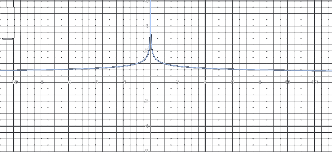
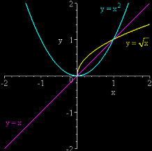

Utilizzando la definizione di derivata, determinare il comportamento nell'origine delle seguenti funzioni (tangente orizzontale, cuspide, flesso a tangente verticale..):
x1/3, x4/3, x2/3, x5/3, x1/2, x3/2
Sia
f(x) = x log x, per x > 0
Dopo aver prolungato per continuità f anche in x = 0, calcolare la sua derivata destra in 0.
Sia
f(x) = e−1/x, per x > 0
Dopo aver prolungato per continuità (da destra) f anche in x = 0, calcolare la sua derivata destra in 0.
In base alle regole di calcolo delle derivate e alla tabella delle derivate delel funzioni elementari, calcolare la derivata delle seguenti funzioni:
3x4 + 5x + x3/2 − 2x−3
log |x|, log 3x, log |(x + 2)/(3 − 2)|;
e−3x(x2 + 2x −1);
1/a ⋅ arctan(x/a), a > 0;
x logx;
arctg (1 + x)/(1 - x);
e2x (2sin 3x − 4 cos 3x);
cotg x, Th x, Coth x;
2x2 + 3x;
SettSh x, SettCh x
log2 |3x|
(x2 + 3x − 2)/(2x + 1);
xx log x;
(ax + b)/(cx + d)
log |log x|
Scrivere l'equazione della retta tangente al grafico di y = f(x) nel punto (x0, f(x0));
f(x) = sin x, x0 = π/3;
f(x) = (x log |x|)3, x0 = −1;
f(x) = 3x2 + 2x + 1, x0 = 2;
f(x) = cos log x, x0 = eπ/2;
f(x) = log x, x0 = 1;
f(x) = ex2, x0 = log 2;
f(x) = ax, x0 = 2;
f(x) = e|−x|, x0 = −1;
Qual è il tasso di variazione del volume di una sfera rispetto al raggio? E rispetto all'area della sua superficie?
Soluzioni
limh → 0 [(0 + h)1/3 − 0]/h = limh → 0h-2/3 = ∞ for both the limit from the left and right. Thus f has an inflection point at 0 as its graph shows.
limh → 0 [(0 + h)4/3 − 0]/h = limh → 0h1/3 = 0.
limh → 0 [(0 + h)2/3 − 0]/h = limh → 0h−1/3 = ∞ for both the limit from the left and right, thus f has an inflection point at 0.

1/∛x
limh → 0 [(0 + h)5/3 − 0]/h = limh → 0h2/3 = 0 for both the limit from the left and right, thus f has an inflection point at 0.
limh → 0 [(0 + h)1/2 − 0]/h = limh → 0h-1/2 = ∞ only the right limit exists.
limh → 0 [(0 + h)3/2 − 0]/h = limh → 0h1/2 = 0 only the right limit exists.

limx → 0x ⋅ log x = 0. f può essere prolungata per continuità ponendo f(0) = 0 per x ≤ 0 e x ⋅ log x per x > 0.
cotg x = cos x/sinx = 1/ tanx; d(1/tanx/dx) = &minus sec2x /(tanx)2 = −1/sin2x = − csc2x;
Th x := Sh x/Ch x; d[Th x]/dx = [(cosh x cosh x) − (sinh x) (sinh x)]/cosh2 = (cosh2xx − sinh2x)/cosh2x. Ricordando che cosh2x − sinh2x = 1 Otteniamo 1/cosh2x = sech2x.
d[Coth x]/dx = d[1/tanh x]/dx; Usiamo la regola della catena scrivendo [(tanh x)−1]'. Si ha: −1(tanh x)−2 ⋅ sech2x = −1 cosh2x/sinh2x ⋅ 1/ cosh2x = −1/sinh2x = − csch2x.
Riscriviamo come e(x2 + 3x) log 2 e derivando si ha: (2x + 3) ⋅ e(x2 + 3x) ⋅ log 2.
Usiamo il T. sulla derivata della funzione inversa. Sia y = sinh x, x = SettSh y. Allora
(SettSh y)' = 1/dy/dx = 1/(sinh x)' = 1/ cosh x = 1/cosh (SettSh y) since cosh2x = sinh2x + 1 x, si ha 1/sqrt(1 + y2).
Analogamente per SettCosh, si ha
(SettCh y)' = 1/dy/dx = 1/ (cosh x)' = 1/(sinh x) and since sinh2x = cosh2x − 1 x, si ha 1/sqrt(y2 −1).
To differentiate logx(a) with respect to x, we can use the change of base formula and implicit differentiation. The change of base formula states:
logx (a) = log(a)/log x. Nel nostro caso log2 |3x| = log|3x|/log 2. Abbiamo quindi la derivata 1/(x log 2);
(2x2 + 2x + 7)/(2x + 1)2;
Abbiamo x = elog x; Possiamo riscrivere la funzione come ex ⋅ log2x; Usando la regola della catena: ex ⋅ log2 x (2log x + log2 x).
(ad − bc)/(cx + d)2;
1/(x log x).
f(x0)
f'(x)
f'(x0)
y = m (x − x0) + f(x0)
√3/2
cos x
1/2
y = 1/2 (x − x0) + √3/2
0
f'(x) = 3(log |x| + 1)2 (log x + 1)
0
y = 1/2 (x − x0) + √3/2
V = 4πr3/3 ⟶ d𝑉/𝑑𝑟 = 4𝜋𝑟2 e s = 4πr2 quindi d𝑉/𝑑s = rs